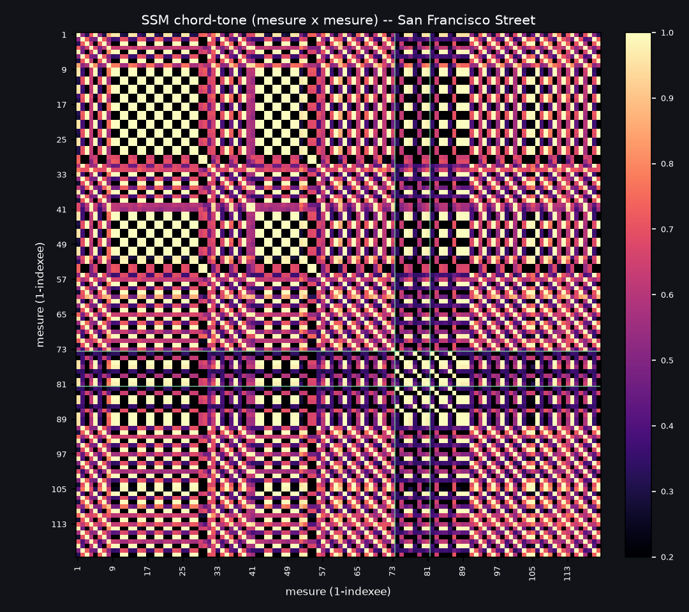

San Francisco Street (Sun Rai) — repliement propose a l'oeil
120 mesures classees par cellule harmonique recurrente, pas par lettre de section.
Clique une mesure pour l'ecouter (audio reel de CE passage). Bordure en pointilles = decode
brut peu confiant a cet endroit (musx, conf < 0.45).
ouvrir le vrai chart
clique une mesure pour charger l'audio
alpha -- vamp Dmaj7 Dmaj7 | Em7 Em7 (8x)beta -- virage Dmaj7 Gmaj7 | Em7 A7 (toutes variantes/passages tronques)gamma -- cadence F#m7 F#m7 | Gmaj7 ... (2x)delta -- pont Bb^7 C D^7 D^7 (4x, corrige)
mes. 1-4 · intro, variante (D7 au lieu de D^7)
1D7intro
2G^7intro
3E-7intro
4A7sus4intro
mes. 5-8 · intro
5D^7intro
6G^7intro
7E-7intro
8A7sus4intro
mes. 9-12 · A, boucle 1/5
mes. 13-16 · A, boucle 2/5
mes. 17-20 · A, boucle 3/5
mes. 21-24 · A, boucle 4/5
mes. 25-28 · A, boucle 5/5
mes. 29-32 · A, cadence de sortie
29Gb-7A
30Gb-7A
31G^7A
32G/A AA
mes. 33-36 · B, 1er passage
mes. 37-40 · B, 2e passage
mes. 41-41 · B, 3e passage -- s'arrete apres 1 mesure : beta qui recommence
mes. 42-45 · C, boucle 1/2 -- MEME cellule que A
mes. 46-49 · C, boucle 2/2 -- MEME cellule que A
mes. 50-53 · D, boucle -- MEME cellule que A/C
mes. 54-57 · D, cadence -- MEME cellule que la fin de A
54Gb-7D
55Gb-7D
56G^7D
57G^7 A9D
mes. 58-61 · D, virage vers B
58D^7D
59G^7D
60E-7D
61A7sus4D
mes. 62-65 · B, 1er passage
mes. 66-69 · B, 2e passage
mes. 70-73 · B (3e passage) + E -- beta continue tout du long ; le pont ne commence PAS ici (Louis, a l'oreille -- confirme : mes.73 a la meme confiance faible que tous les autres A7 du morceau)
70D^7B
71D^7 G^7E
72E-7E
73A7F
mes. 74-81 · PONT, 1er passage -- Bb^7 C D^7 D^7 x2, commence mes.74. Aucun Am7 : mes.73 est encore le beta ci-dessus, mes.81... voir passage suivant
74Bb^7F
75CF
76D^7F
77D^7F
78Bb^7F
79C^7F
80D^7F
81D^7F
mes. 82-89 · PONT, 2e passage -- meme motif Bb^7 C D^7 D^7 x2. Corrige aussi : le "Am7" affiche ici avant n'existait pas dans l'audio (bug de copie de gabarit, voir texte) ; mes.89 double comme pickup vers G
82Bb^7F
83CF
84D^7F
85D^7F
86Bb^7F
87C^7F
88D^7F
89DG
mes. 90-93 · G -- une phrase beta de plus, entree fraiche apres le pont
90D^7G
91G^7G
92E-7G
93A7sus4G
mes. 94-97 · UNE SEULE PARTIE a partir d'ici (Louis) : beta en boucle, passage 1/7
mes. 98-101 · beta en boucle, passage 2/7
98D^7B
99G^7B
100E-7B
101A7B
mes. 102-105 · beta en boucle, passage 3/7 -- FIN ALTERNATIVE : Em Em au lieu de ...A (1st/2nd ending iReal, pas une nouvelle lettre)
102D^7B
103GE′
104E-7E′
105E-7E′
mes. 106-109 · beta en boucle, passage 4/7
106D^7B
107G^7B
108E-7B
109A7B
mes. 110-113 · beta en boucle, passage 5/7
110D^7B
111G^7B
112E-7B
113A7B
mes. 114-117 · beta en boucle, passage 6/7 -- j'avais coupe cette phrase en 2 (D isole + "H" a partir de G) : meme erreur de phase qu'a mes.62, corrigee
114D^7B
115G^7H
116E-7H
117A7H
mes. 118-120 · beta en boucle, passage 7/7 -- FIN ALTERNATIVE : le morceau s'arrete apres 3 mesures, sur Em, sans revenir au D
La matrice de similarite (chord-tone SSM), pour verifier a l'oeil

Matrice cosinus sur les vecteurs chord-tone (harmonia.sections.similarity.harmonic_vectors --
la meme brique que Soudure et l'outil sections, jamais fondamentale-seule). Les lignes vertes
marquent la frontiere corrigee du pont (mes.74 et mes.82). Les bandes visibles montrent les
boucles : la grande diagonale striee au debut/milieu = alpha/beta qui reviennent partout (meme
grille D-G-Em-A), le bloc distinct mes.74-89 = le pont, seul bloc qui ne ressemble a rien d'autre.
Tout ce que j'ai corrige sur cette page (par ordre)
| Endroit | C'etait | C'est maintenant | Comment verifie |
|---|
| mes.62-70 (B, 2e occurrence) | mesure 62 isolee comme "pickup", phase decalee d'1 mesure |
beta correctement phase D-G-Em-A | relecture du texte des accords -- bug de decoupage confirme |
| mes.102 | categorie "fragment" a part | juste beta qui continue |
Louis, a l'oreille |
| mes.70-73 | range "E, beta compresse" separee du pont |
toujours beta ; le pont ne commence pas avant mes.74 |
Louis, a l'oreille + confirme par decode brut (mes.73 aussi peu confiant que les 14 AUTRES accords A de tournant du morceau) |
| mes.73 (affichage accord) | "Am7" (copie du gabarit de lettre) | "A7" (accord de tournant, comme partout ailleurs) |
decode brut musx sur la fenetre audio reelle de CETTE mesure, hors gabarit |
| mes.81 (affichage accord) | "Am7" (copie du gabarit de lettre) | "D^7" |
decode brut musx : Dmaj confiance 0.64, pas Am du tout -- bug de copie, pas une ambiguite |
| Pont (mesures) | 72-79 puis 80-87 (2x8, avec un Am7 en tete chaque fois) |
74-81 puis 82-89 (2x8, Bb C D D x2 chaque fois, aucun Am7) |
idem + confirme par le re-jeu a froid de l'algo du retour (mot/merges4/nommer), qui trouve seul la meme frontiere ("type dada" a partir de mes.74) |
| mes.94-120 (B x2 + E' + B x2 + H, 5 blocs) |
5 lettres separees (B, E', B, H), et mes.114-116 coupees en 2 phases differentes |
UNE SEULE partie, beta en boucle x7, avec 2 fins alternatives (mes.102-105 et mes.117-119 finissent sur Em au lieu de continuer vers A/D) |
Louis : "que du beta en boucle... une ou deux fois une variation du dernier accord... ca vaut une fin alternative" -- confirme en realignant les phrases de 4 mesures sur le decode brut : mes.114-116 etait coupee en plein milieu d'une phrase propre (meme bug de phase qu'a mes.62) |
Ce que ca dit, version finale
Le morceau tient sur 3 cellules de 4 mesures + 1 pont, pas sur 8+ sections independantes :
- alpha (Dmaj7 Dmaj7 | Em7 Em7) joue 8 fois : 5x dans A, 2x dans C, 1x dans D.
- beta (Dmaj7 Gmaj7 | Em7 A7) revient constamment : intro, B (x4), D, G, et TOUTE la queue du
morceau (mes.94-120) qui n'est qu'un seul beta en boucle 7 fois, deux fins alternatives comprises
(mes.102-105 et mes.117-119, qui finissent sur Em au lieu de A/D -- comme un 1st/2nd ending iReal,
pas une nouvelle lettre a chaque fois).
- gamma (F#m7 F#m7 | Gmaj7 ...) joue 2 fois (fin de A, milieu de D), jamais sa propre lettre.
- le pont (Bb^7 C D^7 D^7) joue 4 fois de suite (mes.74-89), pas 2 -- une fois qu'on retire
le faux Am7, c'est juste la meme cellule de 4 mesures repetee 4x, deja bien vu par
reps=2 mais avec un accord fantome au debut de chaque passage.
C'est une lecture a l'oreille + verification par decode brut (musx, hors gabarit de chart) --
pas encore une mesure formelle sur le corpus. A arbitrer avant de coder quoi que ce soit dans
soudure.py/folding.py.